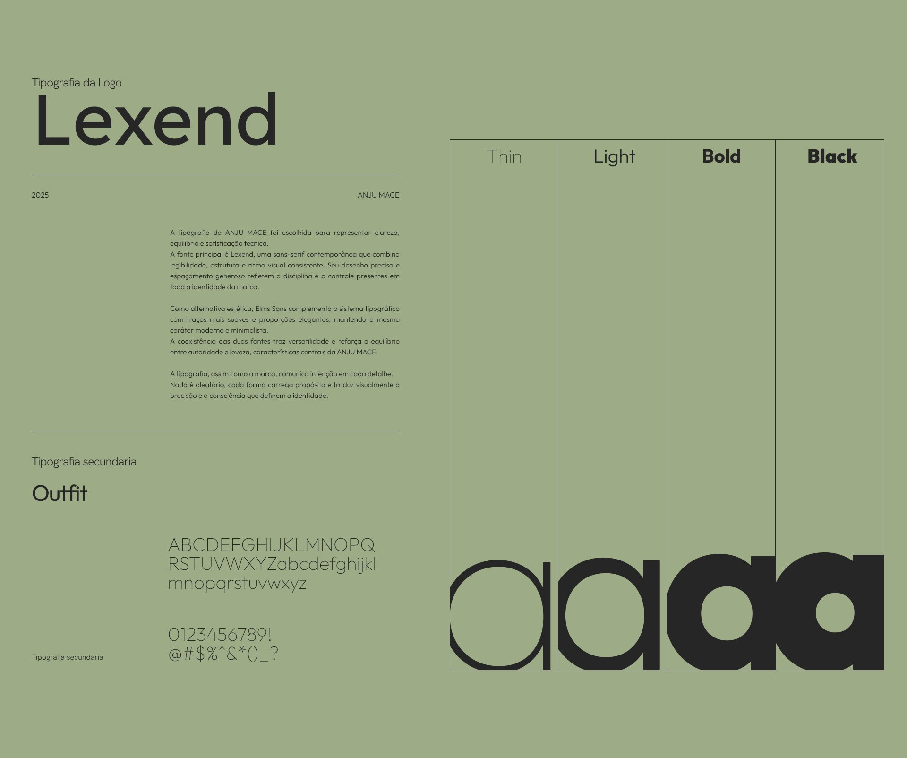

ANJU MACE
Uma identidade para o fitness feminino construída sobre o equilíbrio entre força e leveza, técnica e sensibilidade.
- Cliente
- ANJU MACE
- Ano
- 2025
- Papel
- Direção de arte e coordenação da equipe de design
- Escopo
- Identidade visual, símbolos, brandbook, aplicações e digital

Contexto e desafio
Anju Mace é educadora física dedicada ao treino de mulheres, com método próprio e um aplicativo de treino personalizado para as alunas.
O desafio era traduzir um novo olhar sobre o universo do fitness feminino, que costuma se comunicar pelo excesso: cores saturadas, promessas rápidas, estética de esforço. A marca precisava falar de precisão técnica e resultado duradouro com a mesma calma e sofisticação de uma marca de luxo consciente.
Conceito
Cada escolha visual nasce do equilíbrio entre força e leveza. A estética minimalista projeta profissionalismo sem ostentação e comunica uma beleza funcional e atemporal: a mulher que domina a técnica sem perder a sensibilidade.
O princípio que guia o sistema: o verdadeiro refinamento está na disciplina, na precisão e na harmonia entre forma e função.

Assinatura e variações
A assinatura em caixa-alta, com espaçamento generoso e contraste de peso entre ANJU e MACE, equilibra autoridade e respiro. As variações (horizontal, vertical e empilhada) não são versões alternativas, mas extensões conscientes da mesma assinatura: a horizontal transmite estabilidade e confiança; a vertical, leveza e sofisticação.


Cor
Os neutros naturais — creme, oliva e sálvia — formam a base e comunicam calma, clareza e autocuidado. O preto grafite traz peso e ancoragem; o amarelo suave injeta energia controlada. Nada é decorativo: cada cor tem função dentro da linguagem da marca.
#262626
#F5F5DD
#7A8569
#9EAB87
#E6E6AD
Tipografia
Lexend, uma sans-serif contemporânea de desenho preciso e espaçamento generoso, assina a marca e reflete a disciplina presente em toda a identidade. Outfit entra como tipografia secundária, com traços mais suaves, trazendo versatilidade sem perder o caráter minimalista.

Símbolos
Cinco símbolos de traço fino traduzem os pilares da marca em forma. Juntos, funcionam como um alfabeto gráfico para embalagens, conteúdo e produto digital.
- Excelência como auto-respeito
- Um alvo: precisão, foco, disciplina e domínio técnico.
- Mudança real e duradoura
- Um elo entre passado e futuro: transformação consciente que permanece.
- Inteligência feminina
- Uma mola que impulsiona as demais: influência, liderança e inspiração coletiva.
- Conhecimento é libertação
- A saída de uma bolha: quebrar padrões e criar o próprio caminho.
- Funcionalidade e beleza
- Órbitas em equilíbrio: harmonia entre forma e função.

Touchpoints
O sistema se desdobra do vestuário à embalagem, das redes ao produto digital. A assinatura vertical vira estampa, os símbolos viram padrão, e a paleta natural mantém tudo reconhecível mesmo quando o logo não aparece.


Resultado
A identidade foi lançada junto com o aplicativo de treino, que hoje está no ar. A cliente disse que ninguém nunca tinha entendido a essência dela tão bem, e as alunas se identificaram de imediato com a nova marca.
Conduzi o projeto como diretora de arte, coordenando a equipe de design da estratégia visual às aplicações finais.